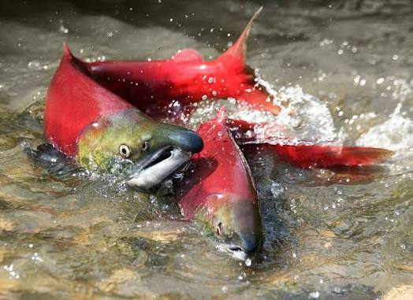
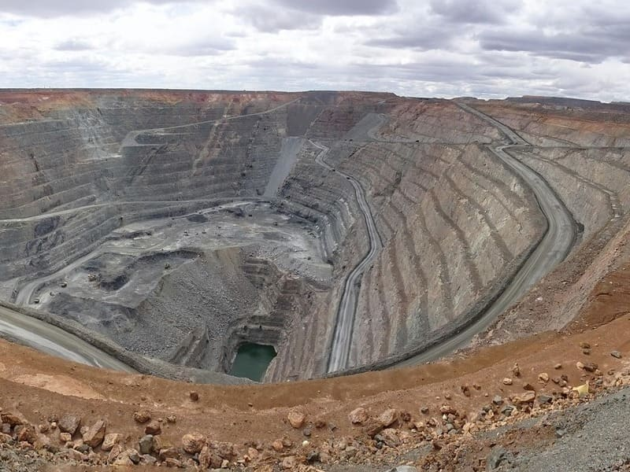
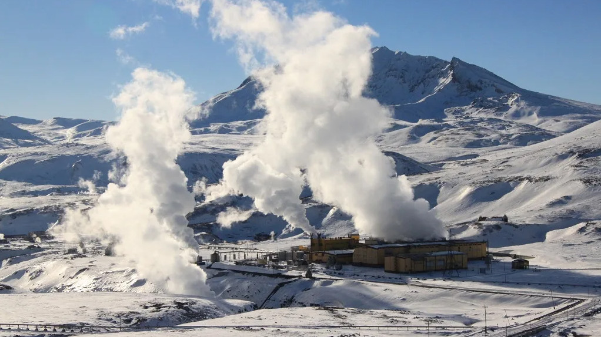

ТОЧКА 01
Курильское озеро
Озеро на юге Камчатки, окружённое вулканическими ландшафтами и дикой природой.
🚚 На вахтовкеИнтерактивный путеводитель по географии, людям, культуре, природным ресурсам и моему путешествию по Камчатке.
Камчатский край расположен на северо-востоке России и омывается Тихим океаном, Охотским и Беринговым морями. Здесь находятся действующие вулканы, ледники, горные реки и побережья с чёрным вулканическим песком.
Рельеф полуострова определяют горные хребты и вулканические массивы. Климат зависит от близости океана, высоты и расположения района. Значительная часть территории отличается богатой и уникальной природой.

Интересный факт: Камчатка входит в Тихоокеанское огненное кольцо — область высокой сейсмической и вулканической активности.
Камчатский край обладает уникальным и разнообразным природно-ресурсным потенциалом, основу которого составляют водные биологические ресурсы и полезные ископаемые.
Камчатка дает более 20% всего российского вылова рыбы. Здесь находятся крупнейшие в мире нерестилища и обитают все 6 видов тихоокеанских лососей.
Основу уловов составляют минтай, тихоокеанские лососи, треска, камбала, сельдь, а также крабы и креветки.
В прибрежных водах обитают сивучи, морские котики, каланы, моржи, касатки и кашалоты.

Регион активно развивает цветную металлургию. Ведется разработка и освоение месторождений (например, Агинское, Кумроч, Озерновское, Аметистовое).
Помимо цветных металлов в регионе имеются запасы каменного и бурого угля, меди, никеля, вольфрама.

Из-за активного вулканизма (~300 вулканов, из которых около 29 действующих) полуостров богат термальными источниками и пароводяными месторождениями.
Регион насчитывается свыше 14 000 рек и ручьев с высоким потенциалом для малой гидроэнергетики.
А также на шельфе Охотского и Берингова морей разведываются запасы природного газа и нефти.

Интересный факт: Реки Камчатки имеют большое значение для нереста тихоокеанских лососей.
Важнейшие отрасли экономики Камчатского края — рыболовство, переработка морепродуктов, транспорт, энергетика и туризм.
Большие расстояния и сложный рельеф делают транспортную инфраструктуру особенно важной. Для многих удалённых районов существенную роль играет авиационное сообщение.

Интересный факт: Сезонность рыболовства и туристических поездок заметно влияет на жизнь региона.
Значительная часть населения края живёт в Петропавловске-Камчатском, Елизове и других населённых пунктах юга полуострова. В удалённых районах есть небольшие поселения, связанные с рыболовством, оленеводством и другими традиционными занятиями.
На Камчатке живут представители коренных малочисленных народов, в том числе ительмены, коряки, эвены и алеуты. Их культура включает традиционные ремёсла, праздники, языки и знания о природе.

Интересный факт: Культурное наследие Камчатки объединяет традиции разных народов Севера.
Культурная жизнь Камчатки объединяет традиции коренных народов, современное искусство и тесную связь с природой. В регионе проходят национальные праздники, фестивали и спортивные мероприятия.
Местная кухня включает рыбу, морепродукты, ягоды и другие продукты, характерные для Дальнего Востока.

Интересный факт: Традиционные песни, танцы и ремёсла помогают сохранять культурное наследие коренных народов Камчатки.
В регионе существуют православные традиции и разнообразные формы духовной культуры коренных народов. Их история связана с семейными обычаями, местными праздниками и отношением к окружающей природе.

Интересный факт: История Камчатки складывалась под влиянием разных культурных и религиозных традиций.
Историю изучения Камчатки формировали путешественники, мореплаватели, учёные и исследователи природы.

Интересный факт: Исследования Камчатки помогают лучше понимать вулканические процессы и уникальные экосистемы полуострова.
Это мой маршрут по разной Камчатке: удалённые природные места на юге, морская прогулка по Авачинской бухте, вулканы, застывшие лавовые поля, чёрный песок и горячие источники.
Первый этап путешествия — дорога на вахтовке и знакомство с удалёнными уголками юга полуострова.
Озеро на юге Камчатки, окружённое вулканическими ландшафтами и дикой природой.
🚚 На вахтовке
Небольшой населённый пункт на юге Камчатки, ставший частью нашего путешествия.
🚚 На вахтовке
Необычные скальные образования из пемзы с причудливыми формами. Здесь особенно заметно вулканическое происхождение региона.
🚚 На вахтовкеНа следующем этапе мы отправились на катере: смотрели на побережье, скалы и морских птиц.

Большая бухта Тихого океана с видами на побережье, сопки и вулканические склоны.
🛥️ На катере
Известные скалы у входа в Авачинскую бухту. Одна из узнаваемых природных достопримечательностей побережья.
🛥️ На катере
Морская прогулка — возможность наблюдать за птицами и почувствовать атмосферу Тихого океана.
🛥️ На катереДальше — джипы, вулканические пейзажи, подъёмы и необычные участки застывшей лавы.

Вулканический массив с кратерами и выразительными горными пейзажами. Перед походом важно проверять условия маршрута.
🚙 На джипе
Вулканические ландшафты, большие открытые пространства и виды на горные массивы.
🚙 На джипе
Необычная территория, изменённая вулканической активностью. Контраст тёмной земли и сухих стволов создаёт особый пейзаж.
🚙 На джипе
Застывшая лава напоминает о силе вулканов и делает пейзаж непохожим на привычную природу.
🚙 На джипе
Тихий океан, простор и знаменитый чёрный вулканический песок. Отличное место для фотографий побережья.
🚙 На джипе
Место, где можно отдохнуть в горячих источниках после долгих переездов и прогулок.
🚙 На джипеМой маршрут: юг Камчатки на вахтовке → морская прогулка на катере → вулканические ландшафты на джипах → Халактырский пляж → отдых в Паратунке.
Поездка на Камчатку лучше всего подходит активным путешественникам, любителям дикой природы, гор и экстремальных видов спорта, готовым к физическим нагрузкам и переменчивой погоде.
Наш маршрут рассчитан на поездку летом.
В поездку заложено 10 дней.
Билеты из Москвы в одну сторону обойдутся примерно в 17 000 на одного человека.
Для перемещения между локациями планируется на арендованном авто. От 6 000 в день.
Проживание будет где-то в гостиницах, где-то в патках.
Аренда палатки: ~800 в день.
Ночь в отеле: ~5 000
Эти ресурсы помогут узнать больше о Камчатке и подготовиться к самостоятельному изучению региона.
Интересный факт: Погода на Камчатке может быстро меняться, поэтому маршруты в горных и вулканических районах требуют подготовки.